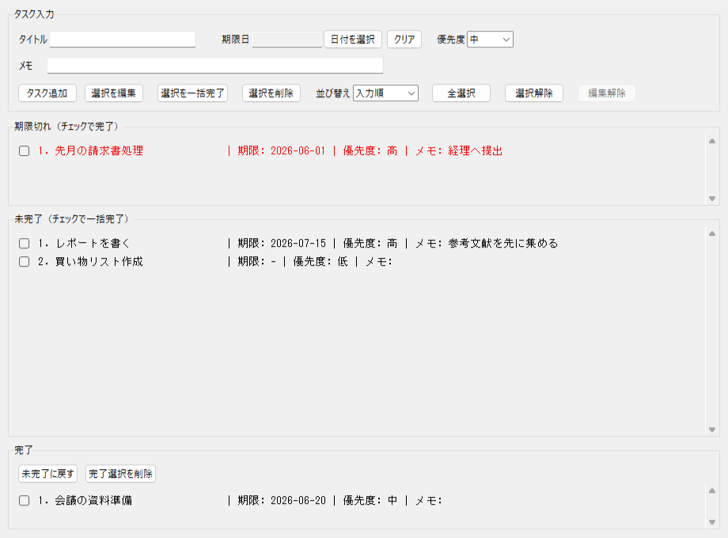

期限・優先度・メモをタスクごとに管理。
チェックボックスで複数タスクをまとめて完了にできます。
実際に todo2.py を起動した画面です。上から順に ①フォーム ②期限切れ ③未完了 ④完了 で構成されています。

スクリーンショットに表示されているすべての入力欄とボタンを説明します。
フォームの内容で新しいタスクを追加します。編集中は「更新」に変わります。
期限切れ・未完了リストで1件だけチェックした状態で押すと、その内容がフォームに読み込まれます。
チェックした複数タスクをまとめて完了 / 削除します。
「編集解除」は編集モードをキャンセルしてフォームをリセットします。
完了エリアでチェックしたタスクを未完了状態に戻します。
完了エリアでチェックしたタスクを削除します（元には戻せません）。
各リストエリアのチェックボックスには以下の形式でテキストが表示されます。タイトルは最大15文字で切り詰め、全角換算で幅揃えされます。
期限切れエリアの行は赤字で表示されます。
配布 exe ファイルを受け取った場合は Python 不要。ソースコードがある場合は Python で直接実行できます。
配布された ToDoApp.exe を好きな場所に置いてダブルクリックするだけで起動します。
Python 3 がインストールされていれば、追加ライブラリのインストールは不要です。
スクリーンショットに写っているすべての機能です。
「日付を選択」ボタンでポップアップカレンダーが開きます。月の移動もできます。「クリア」で期限なしに戻せます。
未完了・期限切れエリアで複数チェックして「選択を一括完了」を押すとまとめて完了にできます。
今日より前の期限を持つ未完了タスクは「期限切れ」エリアに自動移動し、赤字で警告表示されます。
1件だけチェックして「選択を編集」を押すとフォームに読み込まれます。変更後「更新」で上書き保存します。
完了エリアで「未完了に戻す」を押すと選択したタスクを未完了状態に戻せます。
入力順・日付順・優先度順の3モードを切り替えられます。並び替えはすべてのリストエリアに適用されます。
タスクの追加・更新・完了・削除のたびに todo_data2.json へ自動保存されます。アプリを閉じてもデータは残ります。
タスクは状態に応じて3つのエリアへ自動的に振り分けられます。
exe・todo2.py と同じフォルダに自動作成されます。
todo_data2.json をコピーするだけで全データをバックアップできます。JSON 形式なのでテキストエディターでも中身を確認できます。
ToDoApp.exe と todo_data2.json を一緒にコピーすれば、別のフォルダや別の PC でもそのままデータを引き継いで使えます。
気になることはこちらで解決！
A. exe 版（ToDoApp.exe）であれば Python は不要です。ダブルクリックだけで起動できます。
A. Python で作成した exe は誤検知されることがあります。配布元を信頼できる場合は「詳細情報 → 実行」を選択してください。
A. 送られません。 完全オフラインで動作します。すべてのデータは PC 内の todo_data2.json にのみ保存されます。
A. 削除後は元に戻せません。事前に todo_data2.json をバックアップしておくことをおすすめします。なお「完了」状態のタスクは「未完了に戻す」で復元できます。
A. exe 版は Windows（10 / 11）専用です。Mac / Linux で使う場合は Python 3 をインストールして python todo2.py で直接実行してください。